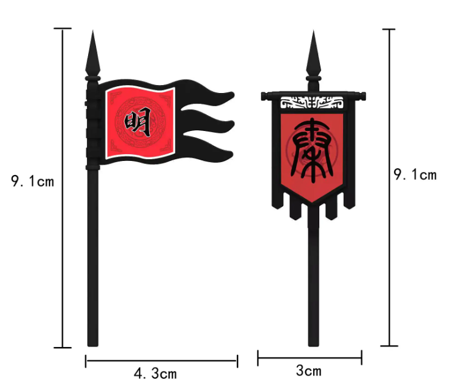

少儿军事启蒙（一）
战役1：官渡之战
一、战役背景
战前形式：公元199年（建安四年），袁绍战胜公孙瓒，据幽州、冀州、青州、并州，尽有河北之地，意欲南下攻占许都，统一北方，问鼎天下；曹操占据兖州、徐州、豫州、司隶等地，于官渡与袁绍展开决战。
兵种与战术：兵种以步兵为主，双方主要以步兵对垒为主要作战形式；骑兵为辅，西汉卫、霍发展出了骑兵冲击战术，但仅限于对战北方游牧民族的骑兵，由于马镫还未出现，对战中原步兵骑兵只能发挥机动性优势充当斥候或者袭扰后勤部队和追击溃军。
二、交战双方势力地图
战前

战后

三、战场还原
双方军事人员
曹操方面
文臣：荀彧、荀攸、贾诩、程昱、刘延、郭嘉（大部分文臣随主力军移动，荀彧留守许昌）
武将：张辽、关羽、史涣、徐晃、曹洪、曹仁、（夏侯渊、乐进、于禁、李典、许褚等禁军将领随主力军移动）
袁绍方面
文臣：沮授、田丰、郭图、许攸（大部分文臣随军出征，许攸叛逃）
武将：郭图、淳于琼、颜良、文丑、蒋奇、眭元进、韩莒子、吕威璜、赵叡、张郃、高览、刘备
战役地图

兵力部署
所需材料
两色兵人约150个，军旗约10支（自制：橡皮泥，牙签；包括帅旗和城池旗帜）。
曹操方面：步骑兵约3万，多为步兵（兵人约30-40个，阵亡者可以循环利用）。
袁绍方面：步兵10万余，骑兵1万余，共12万（兵人100）。
军旗样式：
军旗字体：

战役过程
白马原有曹操守军，放置少量曹方兵人；许昌为曹操大本营，放置大部分曹方兵人.
黎阳有袁绍守军，放少量兵人;袁绍在黎阳北起兵，放置大部分袁方兵人。
过程：建安五年二月，绍遣郭图、淳于琼、颜良攻东郡太守刘延于白马，绍引兵至黎阳，将渡河。
曹操大部队到延津准备渡河，携带大量兵人，袁绍黎阳大部队西出带走大部分兵人迎击曹操主力部队，黎阳留少许兵人。
张辽关羽带少量兵人突袭白马。白马之围解后会同曹操部队南归。
过程：夏四月，公欲北救延，恐兵少不敌，公遂到延津，将渡兵向其后，绍分兵西应之。公引轻兵袭白马，未至十余里，良应战，公使张辽，关羽前登（前锋），斩良，解白马围。
白马城中仍有曹方留守部队，主力部队撤到延津南南阪与张辽部会合，白马城兵人留少许。
袁绍帅大军追击至南阪，携带大量兵人。
过程：绍於是渡河追公军，至延津南，公勒兵驻营（延津南）南阪下；绍骑将文丑与刘备将五六千骑前后至；公纵兵击，大破之，斩丑；公还军官渡，绍进保阳武，关羽亡归刘备。
袁绍大军进驻阳武，阳武放置所有袁方外出兵人。
曹操大军回到官渡，曹方外出兵人都放回官渡。
过程：八月，绍复进临官渡，起土山地道（对射）。公亦於内作之，以相应。时公兵不满万，伤者十二三（十分之二三），城内粮少，欲还许（今河南中部，许昌市），荀彧力劝不可。袁绍运谷车数千乘至，绍营许攸来投，公用许攸计，遣徐晃、史涣邀击，大破之，尽烧其车。公与绍相拒连月，虽比战斩将，然众少粮尽，士卒疲乏。
编外：孙策带几个兵人即可。
孙策闻公与绍相持，乃谋袭许，未发，为刺客所杀。
编外：刘备、刘辟带几个兵人即可,关键得领着关二爷。
汝南（河南东南部）降贼刘辟等叛应绍，略许下。绍使刘备助辟，公使曹仁击破之。备走，遂破辟屯。
乌巢放置五位袁方将领和十分之一（主力部队）兵人。
曹操携带少量兵人夜袭乌巢，留主力在官渡。
袁绍主力尽失，单人北逃。
过程：冬十月，绍遣车运谷，使淳于琼等五人将兵万馀人送之，宿绍营北四十里。公从许攸计，留曹洪守官渡，自举精锐步骑五千，夜袭乌巢（故市亦是屯粮区），放火烧辎重，斩淳于琼、督将眭元进、骑督韩莒子、吕威璜、赵叡等首。同时，绍使张郃、高览攻曹洪。郃等闻琼破，遂来降；绍众大溃，绍弃军走，渡河；冀州诸郡多举城邑降者。
曹操主力部队回到许昌，许昌放置所有曹方外出兵人。
南征刘备，带少量兵人，战后回军许昌。
过程：建安六年四月，公南征备。备闻公自行，走奔刘表，都等皆散。
四、战役总结
战役结果
官渡之战，曹操以接近3：10的兵力战胜袁绍，是典型的以少胜多，以弱胜强的军事案例。战后袁绍兵败忧郁而死，曹操顺势攻灭袁绍势力；建安十二年，东征乌桓，平定了北方，掌握了中原富庶之地，为今后的三国鼎立奠定坚实经济和军事基础。
对比评价
曹方：
主帅自身：曹操处于弱势方，身先士卒，本人的战斗意志极大增强了麾下将帅的战斗力。
用人方面：曹操挟天子令诸侯，收纳众多北方士子（文臣集团），荀彧等谋臣为曹操提供关键战略指导；除自家曹氏、夏侯氏武将外，广纳英才，关羽于曹营被善待即为例证。
政治因素：曹操势力范围小，部下多为自家近臣，得以高效管理部将，部将皆知败亡的后果，所以倾力而为，上下一心。虽也有战时将领和袁绍互通信件的现象，但曹操用超高的政治手腕解决了内部矛盾，实现自身实力的增强。
袁方：
主帅自身：袁绍自身出身豪门，养尊处优，尾大不掉，关键时候不能下定决心，以优势兵力破曹于一地，患得患失，作战过程中逐渐丧失优势。
用人方面：袁绍御下无方，许攸之辈临阵叛逃，张郃等将不能死战，导致战事失利；乌巢五将万余兵力，被曹操少量奇兵突袭剿灭，本身的军事素养有待商榷，乌巢被袭，加速了袁绍兵败。
政治因素：北方刚收复公孙瓒的领土，整个统治区域范围扩大，袁绍未能用足够时间消弭各区域人员的隔阂进行统战工作，导致战时人心不齐，各怀鬼胎。